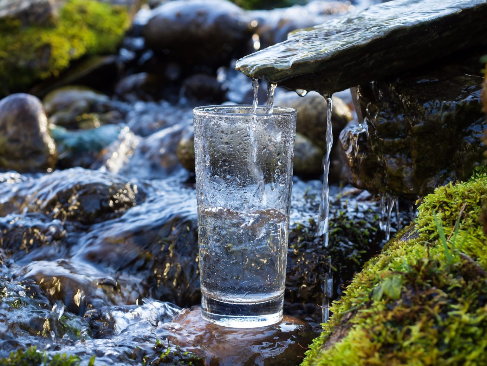
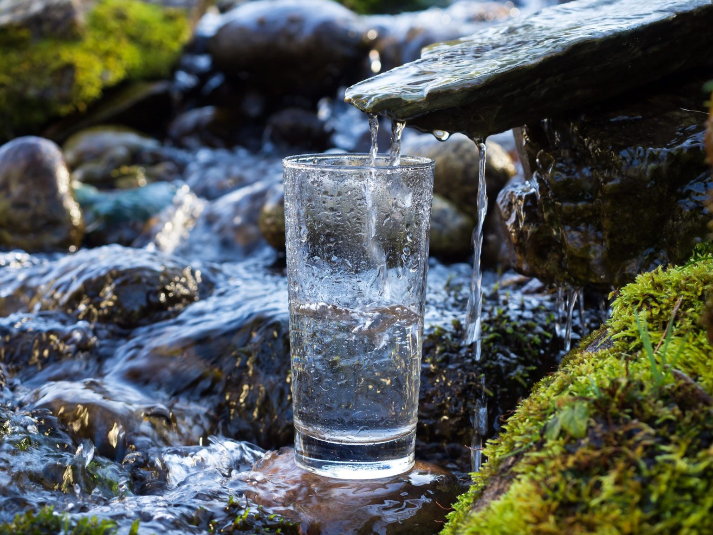

Слишком жесткая вода, хоть и не является опасной для здоровья, но и пользы организму не приносит. При умывании она сушит кожу, дает меньше пены при смешивании с мылом, образует осадок на стенках чайников и в производственных котлах и трубах. Ученые приводят данные о том, что частое употребление воды с высокой жесткостью может привести к образованию камней в организме.По этим причинам жесткую воду перед применением стараются умягчить путем очистки от солей жесткости – различных соединений кальция и магния.
Существуют разные способы очищения воды от солей жесткости.
Всем знакомый способ устранения жёсткости – это термический способ, или кипячение воды. Почти все мы используем этот способ дома, в быту. Кипячение воды устраняет временную жесткость. При нагревании распадаются карбонатные соли, которые и дают осадок на стенках чайника.
Еще один популярный способ умягчения и очистки воды – это метод обратного осмоса. Этот способ заключается в пропуске воды через специальные мембраны в фильтре. Это достаточно эффективный способ очистки, его часто применяют в быту. Но это не всегда удобно, перед тем, как пропустить воду через мембраны, ее необходимо предварительно подготовить. Основной недостаток этого метода в том, что вода очищается не только от солей жёсткости, но и от других солей, и степень этой очистки достаточно высокая, вследствие чего вода теряет свою физиологическую полноценность. Не стоит забывать, что организму человека необходимы и полезны различные соли для поддержания солевого баланса и правильного внутреннего обмена веществ. Данные ученых подтверждают возможность развития сердечнососудистых заболевания от недостатка солей при частом употреблении чрезмерно мягкой воды.
Еще один способ смягчения воды – это электродиализ. При использовании этого метода соли жесткости удаляются из воды при помощи воздействия электрического поля. Этот метод, как и метод обратного осмоса удаляет не только соли кальция и магния, но и соли других элементов.
Иногда воду смягчают путем добавления реагентов. При этом в воду добавляют вещества, при взаимодействии с которыми соли жесткости соединяются, становятся нерастворимыми и выпадают в виде осадка. При очистке малого количества воды этот способ не используется, так как возникают проблемы с определением точного количества реагента. После применения этого метода необходимо очищать воду от осадка.
Способ ионной очистки воды основан на связывании катионов солей жесткости. Этот способ умягчения воды достаточно эффективный, но он также удаляет почти все соли кальция и магния и сильно снижает общую минерализацию воды.
После сильного очищения вода становится бедна микроэлементами. Постоянное употребление такой воды вредно сказывается на здоровье. Почти дистиллированная вода вымывает соли из организма, хоть и не оставляет осадок на чайнике.
Оптимальная для питья вода – это природная чистая вода, жесткость которой находится в допустимых, установленных нормами, пределах. Такая вода не теряет свою физиологическую полноценность и не вредит Вам и Вашим близким.


 
